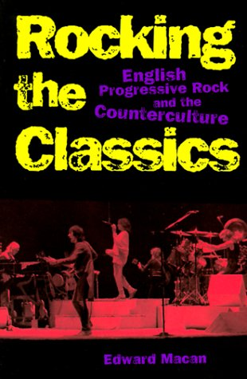

Rocking the Classics - English Progressive Rock and the Couterculture 번역문
Copyright by Edward Macan, NewYork Oxford University Press 1997

정보
You can navigate to YBD members' home pages!!
비정기방송
Return to Main Menu
 Return
to Main Menu
Return
to Main Menu